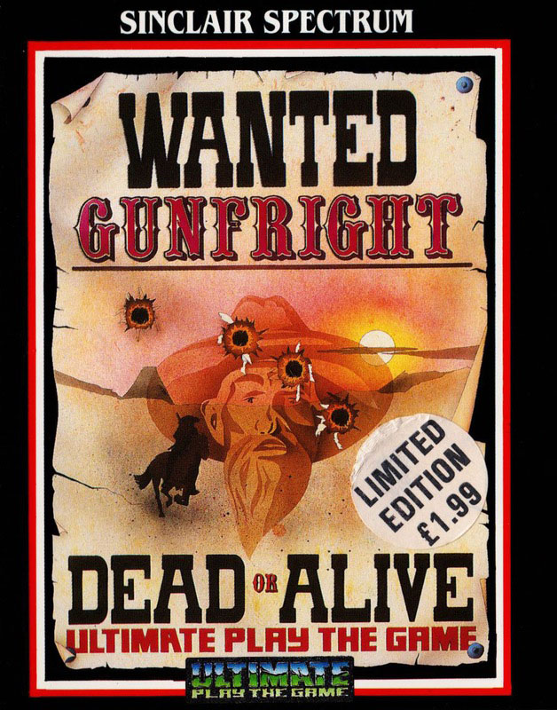
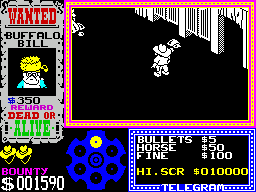
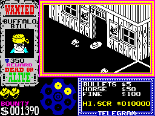
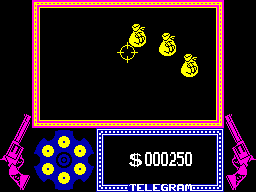

Gunfright


{kind=link}

| Publisher: | Ultimate Play the Game |
| Price: | £9.95 |
| Year: | 1985 |
| Source: | CRASH, Issue 25 |

Now y’all listen up. This here town’s got itself a new Sheriff, reckons he’s goin’ to clear the town of the meanest fastest gun Totin’ Bunch of Rootin’ Tootin’ Gun Slingers which ever did hit the Wild West. Goes by the name of Sheriff Quickdraw: Yes Siree.
As to be expected, in Ultimate’s latest release you play the part of Sheriff Quickdraw. While relaxing in your office a telegram arrives detailing your task: to clear the streets of gunfighters. This task may seem straightforward but the public have ignored your warnings and remain outside, to your horror. For if you should accidentally blow away a poor innocent bystander then you are fined.

The game starts with a picture of a gunsight and bags of money scrolling downwards. In this first stage you must shoot the bags of money to finance your antics. Speed is of the essence, because money plays an important part in the next stage of the game, and you need all you can get. After a short while the money supply dries up and you commence the main part of the game.
In stage two, Filmation II (Ultimate’s 3D masking routines) rears its head again. This part of the game bears a strong resemblance to Ultimate’s previous release, Nightshade, and plays in a similar manner — although there is more depth to this game. Black Rock, the town, is full of women and children who point in the direction of the villain currently being pursued. If you bump into pedestrians you lose a life — and if you shoot one of them by accident or even just for fun you are fined an amount of money which varies as you play the game.

As you walk around Black Rock you’ll need to use your revolver. It contains six bullets which you can use at will, and once all of them have been used up your Super-Slung Six Shot Slinger will reload automatically. You have to pay for ammunition, and like the fines for blowing away townsfolk, the cost varies throughout the game.
Sooner or later in the game you will stumble across a horse. This little beastie is not the normal four-legged type horse but appears to be little more than the Pantomime variety. Like most things in life, and everything in Black Rock, the horse costs money to use — again, the price varies throughout the game. The horse confers two advantages: it allows you to run over pedestrians (great fun) and it greatly increases your speed. This can sometimes be a bit of a disadvantage, because when you’re scooting around at top speed it is very easy to have a rather painful collision with one of the many cacti that litter the streets.

Once you have located an outlaw you must apprehend him. To do this you must first shoot him — the screen cuts to show the outlaw along with your gunsight. This stage of the game is just like the good old fashioned shoot outs. You have to be quick with your trigger finger or else the outlaw dispatches you with one well placed bullet. If you win the shootout then you receive a reward which varies in accordance with the difficulty rating of the current outlaw. You are then transported back to the jail to begin your quest for the next lawbreaker.
The screen is split into several parts. The main window, on the top right of the screen, displays the current play area and expands to occupy the whole of the top half of the screen for the start of the game and the gunfight sequence. The rest of the screen displays the name of the current outlaw being pursued (not in gunfight mode or the money collection sequence) the amount of money in your possession and the number of lives remaining. The last window deals solely with telegram messages which give you all sorts of bits of information about rewards and so on.
CRITICISM
‘Recently Ultimate have come under a lot of stick concerning their product. Well they’re back, up front and with a vengeance too. Looking at Gunfright it appears to be graphically similar to Nightshade: that’s true, but the game element of Gunfright has been considerably developed. The several different stages make it a very enjoyable game and highly addictive. As usual the standard of graphics is high and the whole game is beautifully presented. If you’re an arcade game freak then this one is definitely worth considering. Ultimate have finally got back to their roots. Let’s just hope they can keep this standard up in their future games!’
‘Out of all the recent Ultimate games this is the best — it has a plot which is interesting and immediately playable. The graphics are, as always, excellent, as is the sound. I found this one very playable and fairly easy to get on with. The people in the town point in the direction of the baddies, so tracking them down is pretty easy, shooting them however is another matter. I very much enjoyed playing Gunfright as it is fun to play and has lasting appeal, although I don’t think another 3D game from Ultimate will go down as well as this.’
‘Well it seems that Ultimate have made up for the recent spate of not-so-good games with Gunfright. Some may argue that it’s a Nightshade clone but a very good and addictive one. The graphics are really good with a few nice touches like a horse which enables you to go faster and small children excitedly pointing the way to the nearest outlaw. The arcade sequences involved are colourful and very detailed. Definitely deserves a CRASH Smash.’
COMMENTS
| Control keys: | Gunfight mode X, V or N for left. C, B or M for right. A, S, D or F for walk. 1-0 for fire. Fastdraw mode: X, V or N for left. C,B or M for right. Row beginning Q, W, E, R, T etc for up. Row beginning A, S, D, F, G etc for down. Top row for fire |
| Joystick: | Cursor, Kempston and Interface II |
| Keyboard play: | Responsive, but a bit confusing |
| Use of colour: | Little colour, to avoid attribute problems |
| Graphics: | Detailed backgrounds and characters |
| Sound: | Title tune otherwise limited to spot effects |
| Skill levels: | Gets progressively harder |
| Screens: | Scrolling playing area plus moneybag and shootout screens |
| General rating: | A very enjoyable game. An improvement over Ultimate’s last release |
| Use of computer: | 92% |
| Graphics: | 94% |
| Playability: | 94% |
| Getting started: | 90% |
| Addictive qualities: | 92% |
| Value for money: | 88% |
| Overall: | 92% |